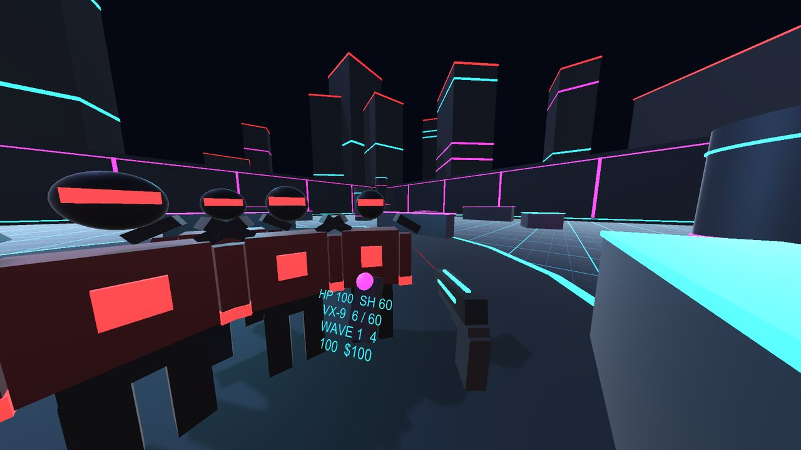
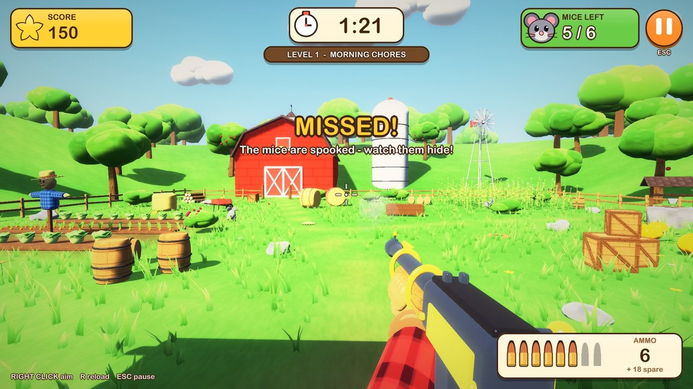
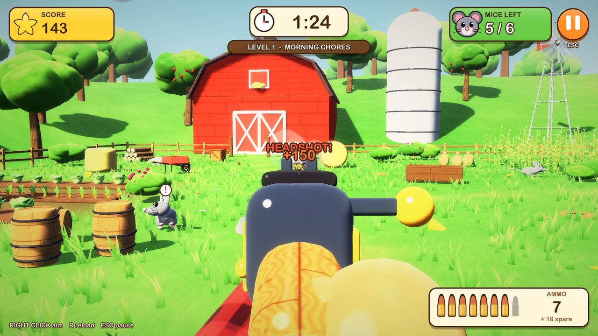
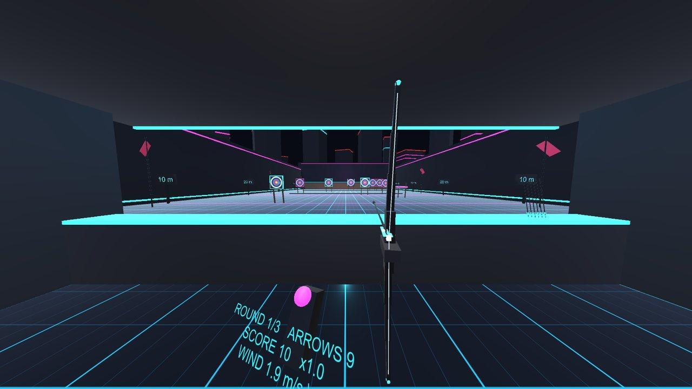

[[t-features]] summarises the advanced features and how far each one has been verified. The labels are the ones defined in the Rubric-to-Evidence Map: Verified features ran in Unity Play mode during this project; Mock XR features ran through the real OpenXR pipeline with the Mock Runtime; Needs hardware features are implemented but their final check needs a physical headset; Planned features are not implemented.
| Feature | Implementation | Status |
|---|---|---|
| Arrow ballistics (gravity, drag, wind) | Arrow.Fly: sub-stepped integration with swept raycasts | Verified |
| Archery trajectory prediction (new) | Arrow.Predict + ArcheryMode.UpdateGuide; LineRenderer | Verified 27 Nov |
| Free fall and canopy flight | ParachuteController: quadratic drag to body-position terminal velocity, canopy glide, flare, landing scoring | Verified |
| Grenades | Grenade: custom gravity and sphere-cast bounce, fuse, radial damage with fall-off | Verified |
| Enemy AI (6 types) on NavMesh | Enemy, WaveManager, runtime NavMeshSurface | Verified |
| Mouse AI (stop, run, turn, flee, hide) | MouseAI state machine on a baked NavMesh, MouseRig procedural animation | Verified |
| Procedural character animation | Enemy walk cycles, SkydiverRig, MouseRig squash and stretch | Verified |
| Split-screen local co-op | Two PlayerControllers, viewport split, gamepad for player 2 | Verified |
| VR rig, controller input, laser-pointer menu | VRRig, VRMenu, VRMenuDriver (OpenXR) | Mock XR |
| VR comfort: vignette, snap turn, seated mode | ComfortVignette, VRRig | Mock XR |
| Controller haptics | Haptics.PulseXR (impulses counted by the runtime) | Mock XR |
| Hand tracking and gestures | HandTracking on XRHandSubsystem: pinch to fire, open palm | Needs hardware |
| Mixed-reality passthrough "breach" | MixedReality: AR Foundation camera, room boundary registration | Needs hardware (logic Mock XR) |
| Binaural audio (ITD, ILD, head shadow) | BinauralFilter on each 3D source | Verified (desktop) |
| Two-handed physical bow drawing in VR | – | Planned |
Arrows do not use a Rigidbody. Each arrow integrates its own state so that drag and wind can be modelled exactly and collisions are never missed at 78 m/s. With velocity v, wind w and the flight direction d = v/|v|, the acceleration is
where kd = 0.0006 m−1 (quadratic drag, about 3.6 m/s2 at full speed) and kw = 0.45 s−1 couples only the component of the relative air velocity that is perpendicular to the shaft. Each frame is split into up to 8 sub-steps of at most 0.75 m; for each sub-step the new position p + vh + ½ah2 is checked with a raycast against the environment layer, so a hit on a 4 cm bullseye ring is found even when the arrow moves 1.3 m per frame. Launch speed rises with the draw D ∈ [0, 1] as v0 = 14 + (78 − 14) D0.85 m/s.
The trajectory guide (Chapter 8) needs the path before the arrow exists. Arrow.Predict runs Equation 9.1 with a fixed step of 40 ms and the same raycast test, writes up to 48 points (1.9 s of flight) into a pre-allocated array and reports whether the path ends on a surface ([[l-predict]]). Using the identical model, rather than a simpler parabola, guarantees that the guide and the real arrow agree, including the round's wind. The cost is at most 48 short raycasts per frame, and the point array is pre-allocated and reused (only the small colour gradient is rebuilt each frame while the bow is drawn); with the guide visible the Archery mode measured 3.1 ms per frame (Chapter 12).
In free fall the vertical velocity vy follows gravity against quadratic drag. The drag coefficient is not a constant: it is recomputed from the terminal velocity vt of the current body position, so that changing position (belly-to-earth, head-down dive, spread eagle) moves the jumper smoothly to a new equilibrium:
At vy = −vt drag equals gravity, so the speed settles exactly on the terminal velocity; when the jumper slows down from a dive, the code clamps the speed so that it settles on, not past, the new vt ([[l-freefall]]).
After deployment the canopy flies at a glide ratio with A/D steering and brakes; holding the flare input near the ground converts forward speed into lift for a soft landing. Touchdown is detected from the CharacterController's collision flags, and the run is scored as rings + coins + landing accuracy (distance to the pad) + landing softness + time bonus − penalties (for example an automatic deployment).
Grenades use a custom integrator with gravity and a sphere-cast bounce, a 2.4 s fuse with an accelerating blink, a proximity trigger and radial damage with distance fall-off. Enemies are pushed by a knock-back vector that decays at 18 m/s2. In the Rat Shooter, ejected magazines are Rigidbodies that inherit the gun's velocity, and mice and the player move on NavMeshes and CharacterControllers with collision layers described in Chapter 6.
PlayerController moves a CharacterController with acceleration-based walking, sprinting with stamina, crouching, sliding, a dash and jumping, plus a field-of-view kick when sprinting or dashing on desktop (disabled in VR). All characters are animated procedurally rather than with imported clips: enemies have code-driven walk cycles, bobbing drones and boss slam wind-ups; SkydiverRig poses the skydiver's limbs from the body position, lean and canopy state; and MouseRig gives the cartoon mice squash and stretch, a wavy tail, head look-at, sniffing, ear twitches, blinking and poses for standing up, grooming and sitting.
All six enemy types share one Enemy class that follows NavMesh paths (AI Navigation package, NavMesh built at runtime) and adds per-type behaviour:
| Type | Behaviour |
|---|---|
| Grunt | Runs straight at the player and claws in melee range |
| Gunner | Keeps its distance, flanks and fires three-round bursts |
| Drone | Flies, circles the player and shoots |
| Sniper | Finds a distant perch with line of sight (states Reposition → Aim → Cooldown), telegraphs a laser for 1.4 s, then fires a high-damage bolt |
| Tank | Slow and heavy, with a frontal energy shield that blocks bullets; it must be flanked or hit with grenades |
| Boss | Fan attack, ground slam that the player dodges by jumping, and summoning of minions |
Hit reactions. Every hit makes the enemy flash white for a few frames (through a MaterialPropertyBlock, so no material copies are made), applies a knock-back impulse along the shot direction, spawns a particle burst (yellow for headshots) and a floating damage number and plays a hit or headshot sound; kills add debris and, for large enemies, an explosion; headshots and kills show distinct hit markers on the HUD. Shots on the tank's shield flash the shield, play a block sound and tell the player through a blocked marker that the shot did no damage. Waves (WaveManager) scale enemy count and mix with the wave number and difficulty, announce each wave with a banner and open the upgrade shop between waves.
Each mouse is a NavMesh agent controlled by an eleven-state machine ([[f-mouse-states]]). Mice wander to random spots, food and cover with randomised gaits (walk, run, dash), zig-zag paths, sudden stops and direction changes, then idle for a random time with a non-repeating action (look around, stand up and sniff, groom, sit) before bolting again. Five variants differ in size, speed, boldness, erratic movement and burrow chance, which makes the population feel like individuals.
stateDiagram-v2 direction LR [*] --> Emerging Emerging --> Moving Moving --> Idle: reached spot Moving --> Eating: reached food Idle --> Moving: random time Eating --> Moving Moving --> Alert: distant shot (startle hop) Idle --> Alert Alert --> Moving Moving --> Fleeing: near miss (panic) Idle --> Fleeing Eating --> Fleeing Fleeing --> Hiding: behind cover Fleeing --> Submerging: reached burrow Hiding --> Peeking Peeking --> Moving Submerging --> Burrowed Burrowed --> Emerging Moving --> Dying: hit Dying --> [*]
MouseAI.State).Reaction to shots and misses. Every shot is reported to every live mouse with the ray and the impact point. The mouse computes its distance to the impact and to the bullet's path; a near miss (under about 2.8 m) makes it panic: it hops, squeaks, and runs at panic speed to the nearest burrow, a hiding spot behind cover out of the player's line of sight, or a random point away from the threat. Shots within 7.5 m make a timid mouse panic and a bold one only startle (a short hop and a freeze); distant shots may startle it ([[l-gunshot]]). A hit mouse plays a cartoon elimination (MouseRig.PlayDeath): a stunned expression, a spinning launch into the air along the shot direction, a landing on its back with twitching legs and circling stars, and finally a “poof”; the HUD awards points, headshot bonuses and the combo.


Interactive objects include five pick-up types dropped by enemies (medkit, ammunition, grenade, double damage and slow motion, collected by walking close), training targets in the tutorial, static, sliding-rail and pop-up archery targets scored 50 (bullseye) / 10 / 8 / 6 / 4 / 2 from the centre outwards, with a bonus multiplier for moving targets, flight rings and coins in the Parachute mode, and the landing pad. Effects are generated in code: muzzle flashes with a short point light, tracers, sparks and impact bursts, explosion shock-waves, shield flashes, damage numbers, bow string and limb bending, arrow trails that fade, and the Rat Shooter's cartoon muzzle flash, smoke and recoil with weapon sway and breathing.
Comfort follows the literature in Chapter 3. ComfortVignette narrows the visible field during artificial motion: its target strength is clamp(speed/4.5 + |turn rate|/100) × the user's strength setting, eased at 4 s−1 when rising and 2 s−1 when falling, and the inner radius shrinks from 0.85 to 0.18 of the view [6]. Snap turning rotates about the head (not the rig origin) in 15–90° steps with a 0.12 s blink [7]; smooth turning is optional. Seated mode recalibrates the player height for a seated user, and the camera never shakes, bobs or kicks in VR. In the Mock Runtime session the vignette reached 0.64 at 4.13 m/s and a 45° snap turn was measured ([[f-vr-vignette]]).

BinauralFilter is an OnAudioFilterRead filter that turns a mono source into a binaural signal using the azimuth of the source relative to the listener's head: an interaural time difference from Woodworth's model, ITD = (r/c)(θ + sin θ) [22], an interaural level difference, and a one-pole low-pass on the far ear to imitate head shadow [21, 23]. It can be switched off in the audio settings. Haptics.PulseXR sends impulses to the controllers: the right controller pulses gently while a bow is drawn (amplitude rising with the draw), strongly on release, on a target hit and on every gunshot (scaled by weapon recoil); both controllers pulse on damage and nearby explosions, and on parachute opening and landing; 78 impulses were counted by the Mock Runtime during the VR verification.
In VR the weapons and the bow are attached to the tracked right hand: the bow's aim direction is the controller's forward vector, so the arrow leaves from the bow rather than the eye (and the trajectory guide then starts at the bow, Chapter 8). The trigger draws and releases, the left trigger zooms, and the grips reload and melee. Menus use a controller laser pointer, and the wrist display replaces the screen HUD. Hand tracking (XRHandSubsystem joint data) maps a right-hand pinch to fire and to menu clicks, a left-hand pinch to a grenade, and an open palm held for 0.4 s to reload (right) or a medkit (left); pinch detection uses hysteresis (2 cm to start, 3.5 cm to release) so tracking jitter does not cause double shots. [[f-vr-arch]] and the following figures show VR frames of the archery interaction from the Mock Runtime session.

